Postado em 17 de Março, 2026
Por volta do Natal de 2024, tive a ideia de construir algo especial para o aniversário do primo da minha esposa. Ele faria 11 anos em maio de 2025, e pensei que um barco de controle remoto seria um presente divertido e educativo — algo com que ele pudesse realmente brincar e que eu pudesse construir do zero.
Comecei a adquirir as peças no início de 2025 e montei o barco de forma incremental, testando cada módulo conforme ia completando. No dia 16 de maio, entreguei o barquinho finalizado junto com um Raspberry Pi como presente de aniversário.
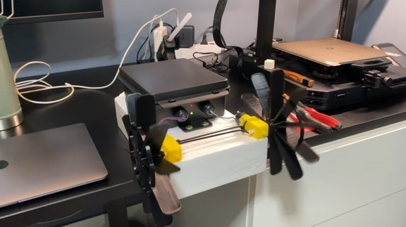
O barquinho finalizado — caixa impermeável com duas rodas de pás acionadas por motores com redução.
O barco é controlado via Bluetooth por um aplicativo de celular no modo gamepad. Usa steering diferencial — dois motores independentes com caixa de redução, cada um acionando uma roda de pás de um lado. Para ir para frente, os dois motores giram. Para virar, apenas um motor funciona. O corpo é feito de plástico e isopor, com toda a eletrônica dentro de uma caixa plástica impermeável.
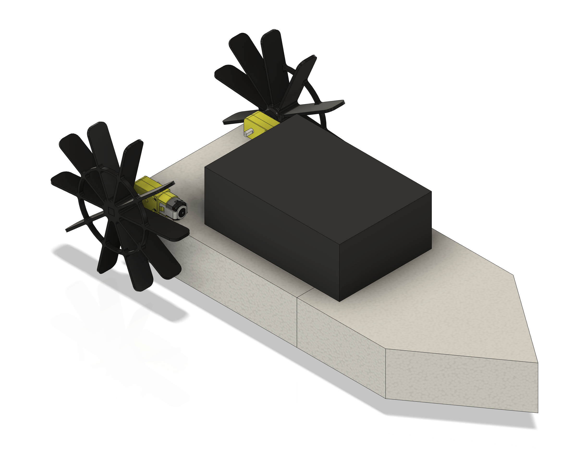
Render no Fusion do design do barco — casco, caixa impermeável, rodas de pás e motores com redução.
A eletrônica passou por duas revisões importantes conforme fui descobrindo as limitações do design inicial.
A primeira versão usava um Arduino Pro Micro, um módulo Bluetooth HC-05, uma ponte H L298N e uma bateria 9V. Também adicionei dois LEDs — um para indicar que a placa estava ligada e outro para mostrar o estado da conexão Bluetooth.
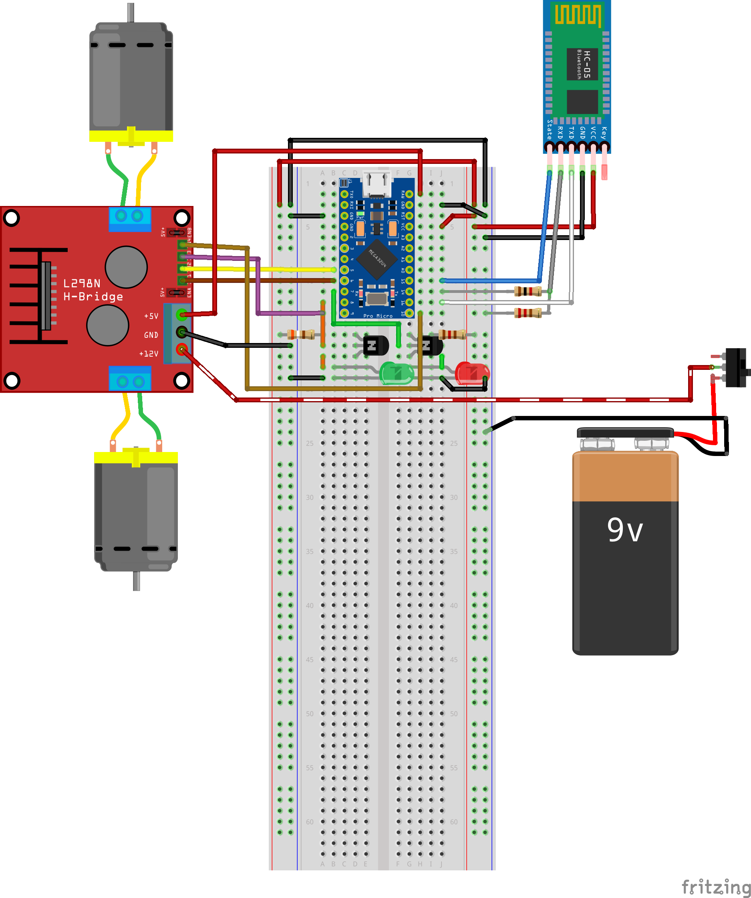
Diagrama de fiação no Fritzing. Nota: reflete apenas a configuração V1 (L298N + bateria 9V).
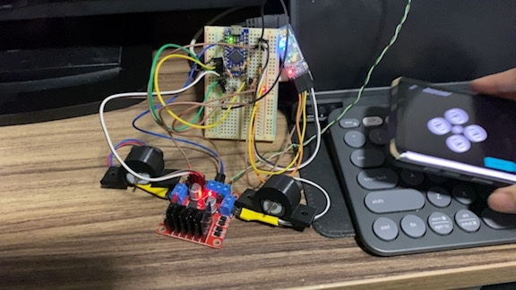
Teste inicial na bancada — Arduino Pro Micro no breadboard, driver L298N e o aplicativo do celular controlando os motores via Bluetooth.
Porém, a bateria 9V simplesmente não conseguia fornecer corrente suficiente para acionar os motores com redução com torque significativo. Os motores mal giravam sob carga.
Testando o controle dos motores via Bluetooth com o L298N, antes de instalar as pás.
Primeiro teste na água na piscina infantil do Diego — ele filmou enquanto eu controlava o barco. As limitações de torque da bateria 9V ficam bem visíveis.
Para resolver o problema de potência, substituí a bateria 9V por uma célula de lítio 18650 de 2200 mAh. Isso exigiu a adição de um módulo de carga TP4056 (para recarga via USB), um regulador de tensão LM2587 Step Up (boost converter) e a troca do volumoso L298N por um driver DRV8833, bem mais compacto.
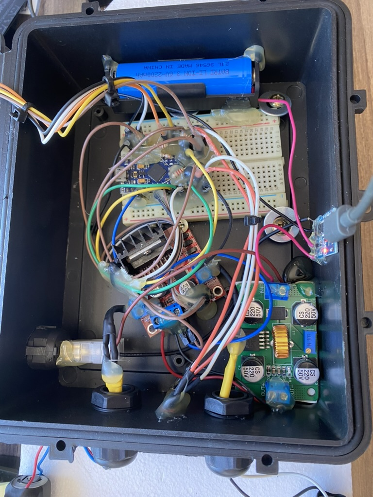
A caixa impermeável com a bateria 18650, conversor step-up LM2587 e carregador TP4056 instalados — antes do DRV8833 chegar.
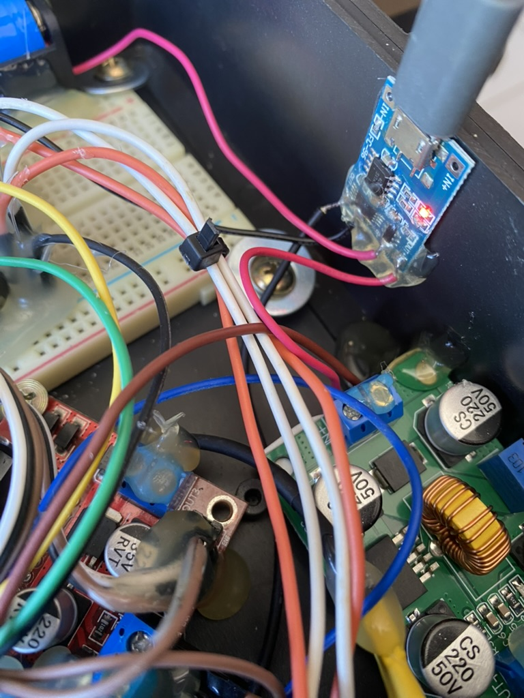
Detalhe do módulo de carga USB TP4056 e fiação, do mesmo dia.
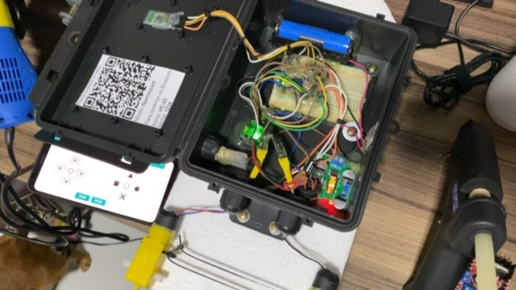
A configuração mais recente — todos os componentes instalados, com as instruções (QR code) na tampa e o aplicativo do celular conectado.
Explicando a conversão para bateria recarregável e demonstrando o acionamento simultâneo real dos motores.
O código Arduino recebe comandos de caractere único via conexão serial Bluetooth: F (frente), B (ré), L (esquerda), R (direita) e 0 (parar). O celular executa um app Bluetooth no modo gamepad que envia esses comandos ao pressionar os botões direcionais.
Dois desafios surgiram durante o desenvolvimento. Primeiro, os dois motores partindo simultaneamente em PWM máximo causavam um pico de corrente grande o suficiente para provocar um brownout — o conversor step-up não aguentava a corrente de partida dos dois motores com redução de uma vez. A solução foi implementar uma rampa de soft-start por PWM, aumentando gradualmente o duty cycle ao invés de saltar direto para o valor alvo.
Segundo, a implementação inicial da rampa usava um loop for bloqueante
separado para cada motor, o que fazia o motor 1 completar toda a sua rampa antes do motor 2 sequer começar.
Isso fazia o barco desviar da rota quando ia reto. A correção foi criar uma função de rampa dupla que
incrementa os dois motores juntos no mesmo loop:
void analogWriteRampaDupla(int pino1, int pino2, int valorFinal, int tempoStep = 5) {
for (int v = 0; v <= valorFinal; v++) {
analogWrite(pino1, v);
analogWrite(pino2, v);
delay(tempoStep);
}
}O código-fonte está disponível no GitHub, incluindo o sketch principal (versão DRV8833) e sketches individuais de teste para o módulo Bluetooth e os motores.
As pás precisavam ser grandes o suficiente para alcançar a água a partir da posição de montagem, mas leves o suficiente para não sobrecarregar o torque limitado dos motores com redução. Cheguei a um design radial de 10 pás, modelado no Fusion. Imprimi a primeira pá em casa, mas fiquei sem filamento para a segunda — meu cunhado Diego gentilmente imprimiu para mim.
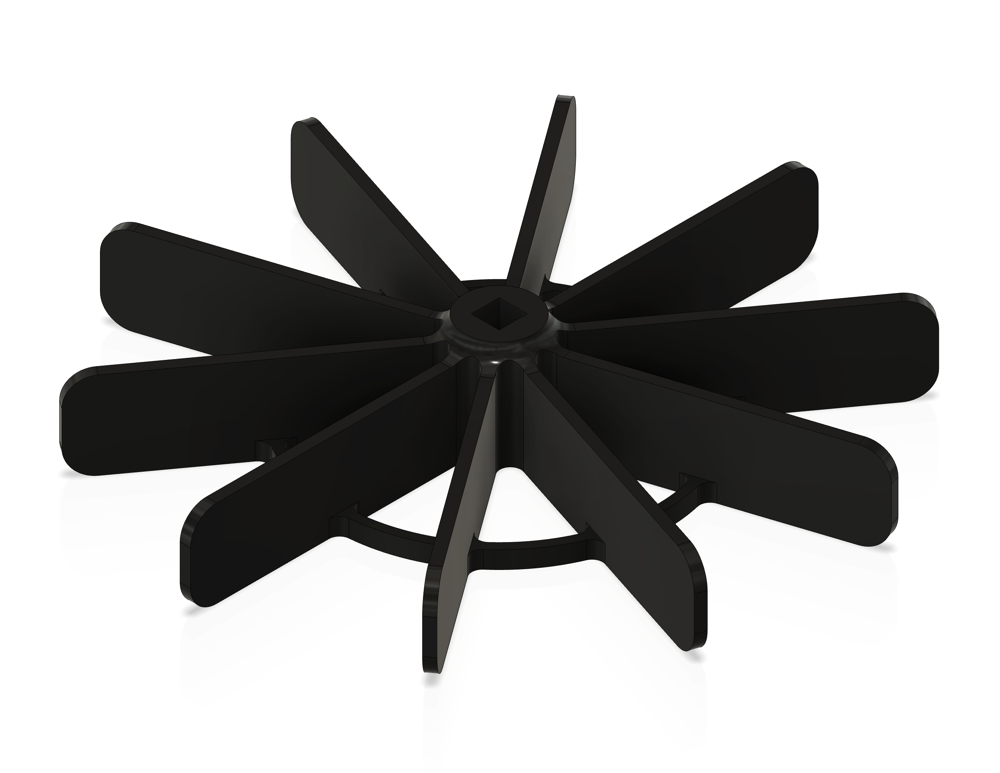
Render no Fusion da roda de pás — vista em perspectiva.
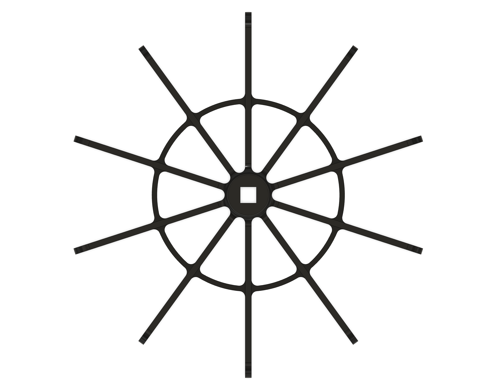
Vista de cima mostrando o hub e a estrutura radial das pás.
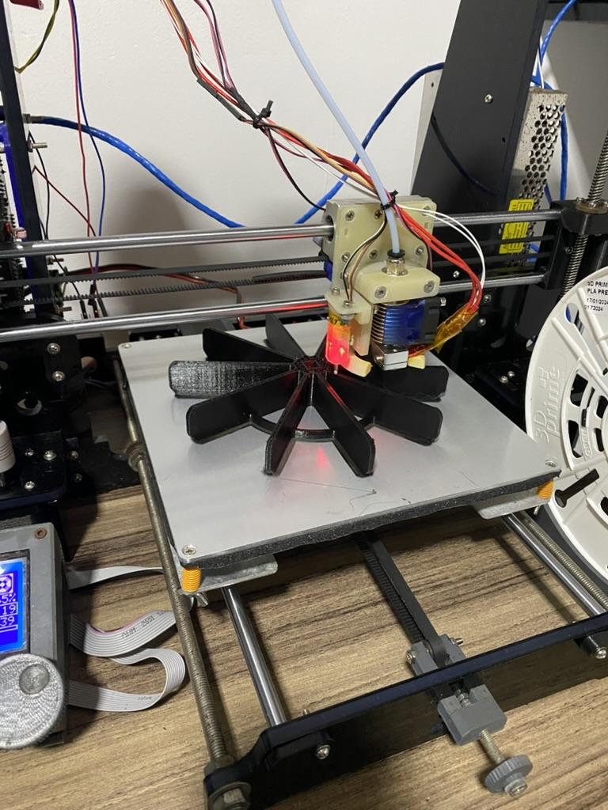
Uma roda de pás sendo impressa na impressora 3D.
Testando com apenas uma roda de pás (ainda na bateria 9V).
As duas rodas de pás funcionando simultaneamente — no dia do teste na água.
Os motores com redução têm um eixo de saída quadrado, mas as rodas de pás precisam de um furo redondo. Projetei um adaptador de acoplamento que faz a transição de seção quadrada para redonda, permitindo que as pás sejam montadas com segurança nos eixos dos motores.
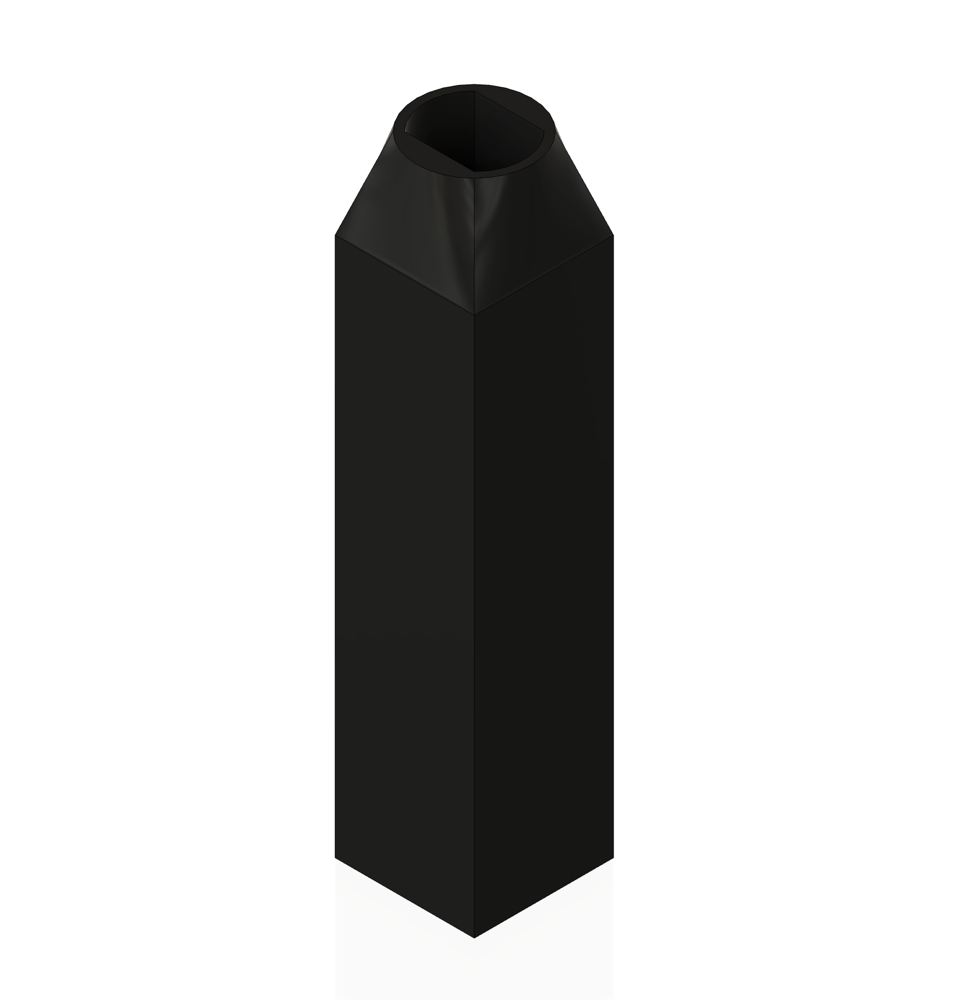
Render no Fusion do acoplamento de eixo — transição quadrado para redondo.
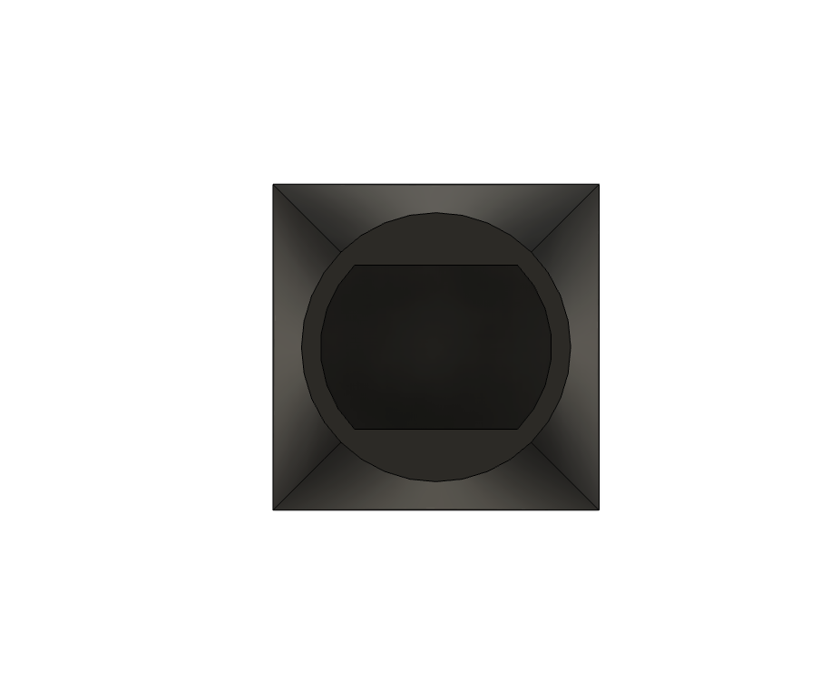
Vista de cima mostrando o furo quadrado que encaixa no eixo do motor.
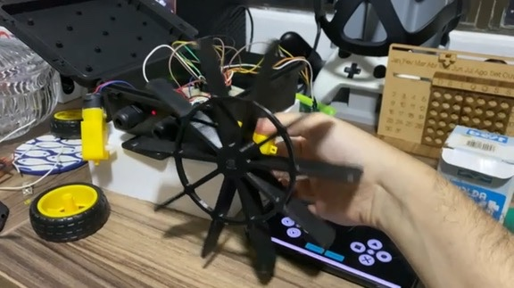
Testando as pás montadas com o aplicativo do celular — motores, acoplamentos e rodas de pás funcionando juntos.
O barquinho foi entregue no dia 16 de maio de 2025, acompanhado de instruções impressas com um QR code para baixar o aplicativo de controle Bluetooth e as credenciais de conexão. Um projeto divertido do início ao fim — e esperamos que um presente de aniversário memorável.
{kind=link}
{kind=link}
{kind=link}
{kind=link}
{kind=link}
{kind=link}
{kind=link}
{kind=link}
{kind=link}
{kind=link}
{kind=link}
{kind=link}
{kind=link}